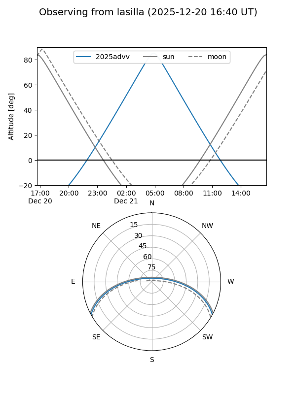
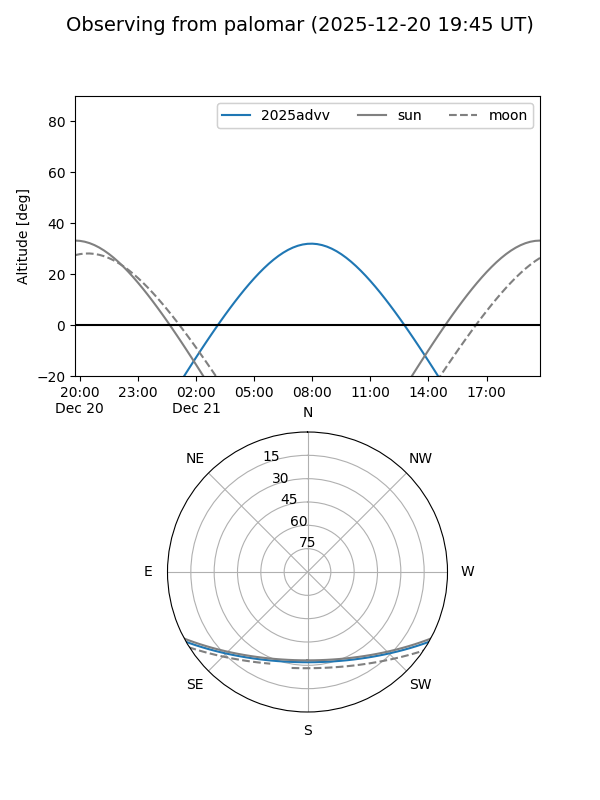
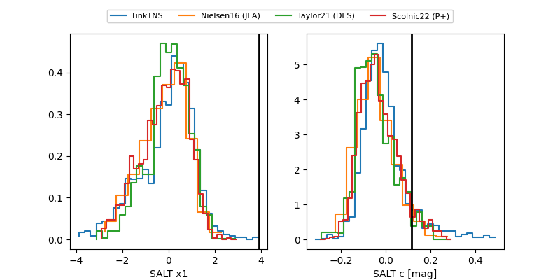

2025advv
Target 2025advv at 2025-12-22 17:21
Aliases and brokers:
FINK: fink-portal.org/ZTF25aceolpx
Lasair: lasair-ztf.lsst.ac.uk/objects/ZTF25aceolpx
ALeRCE: alerce.online/object/ZTF25aceolpx
TNS: wis-tns.org/object/2025advv
YSE: ziggy.ucolick.org/yse/transient_detail/2025advv
alt names
ZTF25aceolpx (ztf,fink_ztf)
2025advv (tns,yse)
ATLAS25ojl (atlas)
Coordinates:
equatorial (ra, dec) = 92.1282,-24.64820
equatorial (HMS+DMS) = 06:08:30.77,-24:38:53.51
galactic (l, b) = (231.1548,-19.92472)
Flags:
Photometry:
last atlasc=18.78, atlaso=18.67, ztfg=19.87, ztfr=19.08
5 atlasc, 9 atlaso, 6 ztfg, 15 ztfr detections
Lightcurve

Visibility


Additional plots
